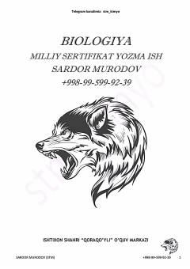

BMBiologiya fanidan milliy sertifikat imtihoni uchun yozma ish variantlari va masalalar to'plami.
Ushbu qo'llanma biologiya fanidan milliy sertifikat imtihoniga tayyorgarlik ko'rayotganlar uchun yozma ish variantlari va murakkab masalalar yechimlarini o'z ichiga oladi. Material genetik tahlillar, populyatsiya genetikasi va qon guruhlariga oid masalalarni yechish ko'nikmalarini oshirishga mo'ljallangan.